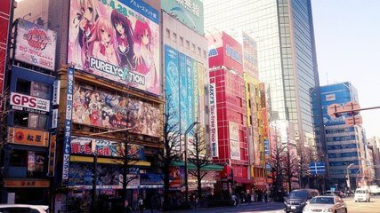

morly旅游圈
秋叶原俗称为AKIBA，位于日本东京都台东区西南部，属下谷地域。东至昭和通、北至藏前桥通、西接千代田区外神田四丁目、南邻千代田区神田练塀町与神田松永町。秋叶原以位于秋叶原站西侧的中央道为中心，有大小不一的共250家以上的电器商品专卖店，是与时代尖端产业同步的电器大街。
秋葉原の由来：
江户时期，这里火灾多发，因为木造建筑过于密集，所以曾发生过好几次差点蔓延至整个城市的大火。江户时期结束，刚一进入明治的时候又来了一场大火，这场火灾之后，政府终于下定决心，划出一片空地作为「火除地」，大火烧到这里之后没有可烧的东西，也就无法再蔓延下去。英照皇太后派人在这里修建了一座神社，供奉着防火神——「秋葉大権現」，这座神社叫「秋葉神社」，这一片地区也就被人们叫做「秋葉原」「あきばはら」。 1890年，神社被迁走，原址修建了火车站，当时的铁道官员搞错了「秋葉原」的读音，「あきはばら」这个错误的读法也就默默被人们接受，一直沿用至今。
二次元圣地
秋叶原不仅是电器大街，更是御宅一族的天堂——二次元的圣地。在这里你可以找到你想要的各种动漫周边，繁荣的cosplay文化更是秋叶原的一大看点，如果你喜欢动漫及cosplay，那么秋叶原一定不会让你失望。
AKB48
秋叶原是屹立于日本音乐界顶点的日本第一女子偶像组合AKB48的大本营。在秋叶原的唐吉轲德卖场8楼有专用的AKB48剧场。以“可以见面的偶像”为特点的AKB48几乎每天都会在此进行公演。由于剧场规模较小但观众数量众多，所以每场公演的门票都需要事先在网上报名、排队和抽签才可购得，想要观看AKB48的表演可要提前购票哦！
一日旅游攻略：
上午10:00逛东京动漫中心,尝秋叶原美食
电器街出口的正前方是秋叶原UDX。在第二层的秋叶原广场常常会举办动漫相关的各种活动。坐电梯直达四层,就到了东京动漫中心(東京アニメセンター)。这里可以看到近期人气的动漫游戏作品的宣传展台和相关资料。另外，中心内还设有动漫周边贩卖区，可以购买喜欢的限定周边留做纪念。逛完东京动漫中心,可以在其他楼层解决午饭的问题。从一层到三层各种料理餐馆一应俱全,这里推荐的是二层的汤汁茶泡饭EN Akibaichi店。店内设有自动食券贩卖机,套餐种类丰富,完全不用担心点餐时的语言沟通问题,就可以尝试各种传统的日式茶泡饭了。
中午12:00 商品大采购
秋叶原电器街口往西走上100米,就到了秋叶原的主干道,中央大道(中央通り)。在道路两边,一眼放去,各色动漫店,游戏中心,电器免税店应用尽有。从人气产品电饭煲,马桶盖,到保温杯,各种动漫限量周边应有尽有,对希望购买各种日本各色电器数码,游戏动漫的游客来说,秋叶原的中央大道可谓是购物的天堂。 从中央大道拐进里面的小道,仍会有很多惊喜发现。在路旁发咖啡店传单的女仆,门口排放着大量价格实惠数码产品的小店,以及二手产品交易的动漫店铺。在这里为大家推荐寿屋秋叶原馆和秋叶原 cultures zone。寿屋(KOTOBUKIYA)标志性的绿色大型招牌很容易找到。店内以销售各种人气动漫游戏周边为主。
下午3:30 体味别样秋叶原
秋叶原除了以动漫游戏,电器街出名外,附近仍有许多值得一逛的景点。这里就为大家介绍两个不为外国游客熟知的好地方,2K540特色店铺街和神田神社。2K540特色店铺街位于秋叶原站北面500米左右的铁道桥下。充满现代感设计的2K540,从日本传统工艺职人的工房,到艺术展厅,咖啡厅,杂货店,一共有四十多家。 从秋叶原中央大道往西走200多米,就是下一个推荐的景点:神田神社。始于1616年的神田神社,原为江户城表鬼门守护的场所,被当地人爱称为神田明神。神社境内的本殿是日本国家的登录文化财产,最值得一看。这里平时游客寥寥。在购物娱乐之后,可来这里享受片刻的宁静。
晚18:00 万世桥边享美食
沿着秋叶原中央大道往南走,就能看到万世桥高架桥了。原为万世桥站的一部分站台被保留,经改造成了现在的美食一条街mAAch ecute。标志性的红砖站台,映在缓缓流过的神田川上,顿时让人心生向往。沿着神田川边散步,找一家红砖下的餐馆,坐在窗边看桥上车水马龙,不远处秋叶原灯火霓虹,惬意至极。
图文如有侵权，请联系我们！
内容整理至网络，如有侵权，请联系我们！1255394075@qq.com
